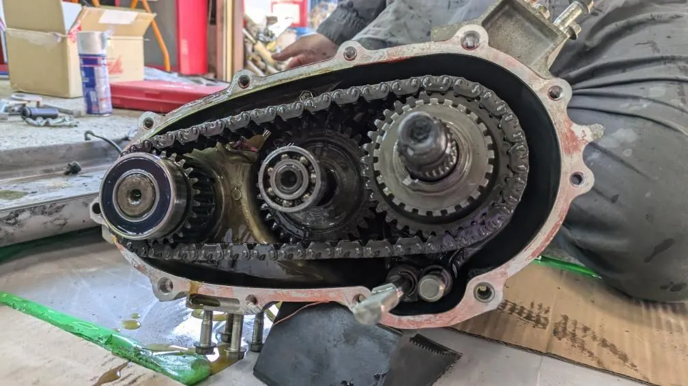

WORK 01
JB23 トランスファー ダウンギア組み換え（2台）
/ 作業事例
駆動系記録 // JB23 ×2台

石川県からお越しのカップルのお二人から、JB23ジムニー2台分のトランスファー ダウンギア組み換えをご依頼いただきました。 遠方からありがとうございます。
「自分たちも勉強したい」とのことで、今回はお二人にも一緒に作業していただきました。 トランスファーを降ろしてケースを開け、チェーンとギアを抜き、元どおりに組み戻す——これを2台分。 実際に手を動かしてみて、作業の大変さを実感してもらえたようです。
作業の様子
一緒に作業
- 2台分のトランスファー脱着
- ケースを開けてチェーン・シャフト・ギアを取り外し
- ダウンギアへ組み換え、ベアリングとあわせて組み付け
- ケースを閉じて車両へ搭載・動作確認
Nova_83LAB にご依頼いただいた方へ。よろしければ Googleのクチコミ で感想をお聞かせください。